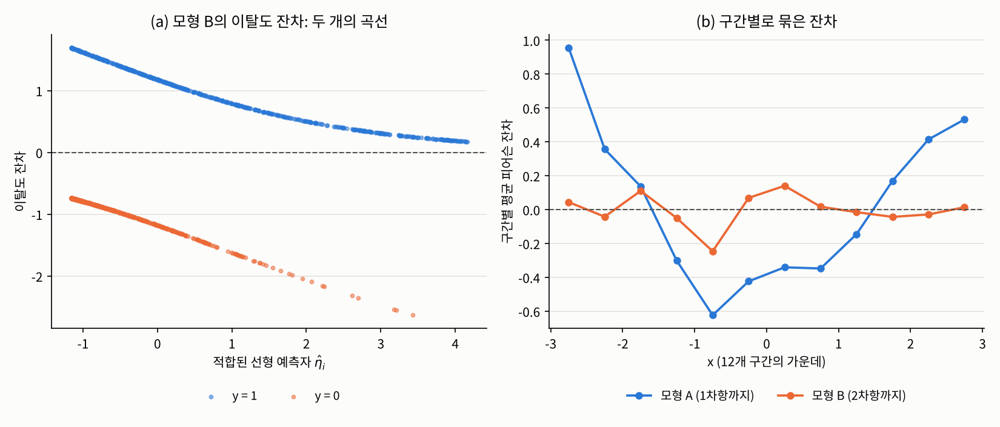

4.5 이탈도와 잔차
4장 로지스틱 회귀 · 잔차제곱합의 자리를 대신하는 양
들어가며
3장에서는 잔차제곱합이 여러 가지 일을 했습니다. 모형이 데이터에 얼마나 잘 맞는지를 재고, 두 모형 가운데 어느 쪽이 나은지 비교하고, 잔차를 그려서 모형에서 빠진 것을 찾았습니다. 그런데 로지스틱 회귀는 최소제곱이 아니라 최대우도로 적합하므로, 잔차제곱합을 그대로 쓸 근거가 없습니다.
이번 글에서는 로지스틱 회귀에서 잔차제곱합의 역할을 하는 이탈도(deviance)를 정의합니다. 그리고 세 가지 질문을 차례로 다룹니다. 두 모형을 어떻게 비교할까요? 이탈도 하나만 보고 모형이 잘 맞는지 판정할 수 있을까요? 잔차는 어떻게 정의하고 읽어야 할까요?
문제 1: 두 모형을 무엇으로 비교할까
문제 상황
설명변수 \(x \in [-3, 3]\)와 이진 반응변수 \(y\)를 1000개 관측했습니다. 실제로는 로그오즈가 \(x\)의 이차식 \(-1 + 0.5x + 0.4x^2\)인 모형에서 뽑은 데이터이지만, 분석하는 사람은 그 사실을 모릅니다. 그래서 세 가지 모형을 적합해 보려고 합니다.
- 영모형: 절편만 있는 모형 \(\mathrm{logit}(\pi_i) = \beta_0\)
- 모형 A: \(\mathrm{logit}(\pi_i) = \beta_0 + \beta_1x_i\)
- 모형 B: \(\mathrm{logit}(\pi_i) = \beta_0 + \beta_1x_i + \beta_2x_i^2\)
3장이라면 각 모형의 잔차제곱합을 비교했을 것입니다. 로지스틱 회귀에서는 무엇을 비교해야 할까요?
접근 아이디어
로지스틱 회귀는 우도를 최대로 하도록 적합했으니, 모형이 얼마나 잘 맞는지도 우도로 재는 것이 자연스럽습니다. 다만 로그우도의 값 자체는 기준점이 없어서 해석하기 어렵습니다. 그래서 데이터를 가장 잘 맞힐 수 있는 모형의 로그우도를 기준으로 삼고, 거기서 얼마나 떨어져 있는지를 재기로 합니다. 관측값마다 확률을 하나씩 따로 주어 데이터를 그대로 재현하는 모형이 그런 기준입니다.
필요한 개념들
포화모형은 쓸모 있는 모형이 아니라 비교의 기준입니다. 모수가 관측값만큼 많으니 아무것도 요약하지 못하지만, 그 대신 이항분포 모형이 데이터에 줄 수 있는 가장 큰 우도를 줍니다. 이탈도는 우리 모형이 그 최고점에서 얼마나 떨어져 있는지를 재는 양이고, 작을수록 데이터에 가깝습니다. 이항분포의 이항계수는 \(\ell_{\text{sat}}\)과 \(\ell(\hat{\beta})\)에 똑같이 들어 있어서 차이를 내면 사라집니다.
이진 데이터(\(m_i = 1\))에서는 포화모형이 모든 관측값을 확률 \(1\)로 맞히므로 \(\ell_{\text{sat}} = 0\)이고, 각 항은 \[d_i = \begin{cases} -2\log\hat{\pi}_i, & y_i = 1, \\ -2\log(1 - \hat{\pi}_i), & y_i = 0 \end{cases}\] 입니다. 머신러닝에서 쓰는 교차 엔트로피 손실(cross-entropy loss)의 두 배와 같은 양입니다.
이탈도가 잔차제곱합의 일반화라는 것은 정규분포에서 같은 계산을 해 보면 알 수 있습니다.
그러니 이탈도는 “정규분포에서 잔차제곱합이 하던 일을, 다른 분포에서도 할 수 있도록 우도의 언어로 다시 쓴 것”입니다. 잔차제곱합처럼 이탈도도 설명변수를 추가하면 줄어들기만 합니다. 더 큰 모형은 더 작은 모형의 모든 계수 조합을 포함하므로 최대 로그우도가 줄어들 수 없기 때문입니다(3.4절의 \(R^2\)와 같은 이유입니다). 따라서 두 모형을 비교할 때는 이탈도가 얼마나 많이 줄었는지를 봐야 합니다.
차이를 내면 \(\ell_{\text{sat}}\)이 사라지므로, 이탈도의 차이는 두 모형의 최대 로그우도의 차이의 두 배입니다. 이것은 5장에서 다룰 우도비 검정(likelihood ratio test)의 검정통계량 그 자체이고, 증명도 5장에서 다룹니다. 이렇게 이탈도의 차이로 모형을 비교하는 것을 이탈도 분석(analysis of deviance)이라고 하며, 3장의 분산분석에서 제곱합의 차이로 모형을 비교했던 것에 해당합니다. 작은 모형이 참이라면 이탈도의 차이는 대략 자유도 \(d - q\)인 카이제곱 분포를 따르므로, 그보다 훨씬 크면 추가한 변수가 쓸모 있다고 판단합니다.
해결
세 모형을 4.2절의 IRLS로 적합하고 이탈도를 계산해 보겠습니다.
import numpy as np
from scipy import stats
def irls(X, y, m=1, tol=1e-8, max_iter=50):
beta = np.zeros(X.shape[1])
for _ in range(max_iter):
pi = 1 / (1 + np.exp(-X @ beta))
step = np.linalg.solve(X.T @ (X * (m * pi * (1 - pi))[:, None]), X.T @ (y - m * pi))
beta = beta + step
if np.max(np.abs(step)) < tol:
return beta
raise RuntimeError("수렴하지 않았습니다.")
def xlogy(a, b): # 0 log 0 = 0 규약
return np.where(a > 0, a * np.log(np.where(a > 0, a, 1) / b), 0.0)
def deviance(y, mu, m=1):
return 2 * np.sum(xlogy(y, mu) + xlogy(m - y, m - mu))
np.random.seed(1557)
n = 1000
x = np.random.uniform(-3, 3, size=n)
y = np.random.binomial(1, 1 / (1 + np.exp(-(-1 + 0.5 * x + 0.4 * x**2)))) # 참된 로그오즈는 x의 이차식
X0 = np.ones((n, 1)) # 영모형: 절편만
XA = np.column_stack([np.ones(n), x]) # 모형 A: 1차항까지
XB = np.column_stack([np.ones(n), x, x**2]) # 모형 B: 2차항까지
D = {}
for name, Xm in [("영모형", X0), ("모형 A", XA), ("모형 B", XB)]:
mu = 1 / (1 + np.exp(-Xm @ irls(Xm, y)))
D[name] = deviance(y, mu)
print(f"{name}: 계수 {Xm.shape[1]}개, 이탈도 = {D[name]:.2f}, 잔차 자유도 n - d = {n - Xm.shape[1]}")
diff = D["모형 A"] - D["모형 B"]
print(f"이탈도의 차이 D_A - D_B = {diff:.2f}, 자유도 1인 카이제곱 분포에서 이보다 클 확률 = {stats.chi2.sf(diff, 1):.1e}")영모형: 계수 1개, 이탈도 = 1384.85, 잔차 자유도 n - d = 999
모형 A: 계수 2개, 이탈도 = 1300.63, 잔차 자유도 n - d = 998
모형 B: 계수 3개, 이탈도 = 1096.45, 잔차 자유도 n - d = 997
이탈도의 차이 D_A - D_B = 204.18, 자유도 1인 카이제곱 분포에서 이보다 클 확률 = 2.6e-46영모형에서 모형 A로 가면 이탈도가 약 84 줄고, 모형 A에서 모형 B로 가면 약 204가 더 줄어듭니다. 모형 A가 참이라면 \(x^2\) 항 하나를 추가해서 줄어드는 이탈도는 대략 자유도 \(1\)인 카이제곱 분포를 따라야 하는데, 그 분포에서 \(204\) 이상이 나올 확률은 \(10^{-46}\) 수준입니다. 따라서 \(x^2\) 항은 분명히 필요하다고 결론 내립니다. 정확히 어떤 기준으로 “필요하다”고 판단하는지, 곧 유의수준과 \(p\)값의 의미는 5장에서 다룹니다.
문제 2: 이탈도 하나로 적합도를 판정할 수 있을까
문제 상황
그런데 위의 출력을 다시 보면 이상한 점이 있습니다. 참된 모형인 모형 B의 이탈도는 \(1096.45\)로, 잔차 자유도 \(n - d = 997\)보다 꽤 큽니다. 흔히 “이탈도가 잔차 자유도와 비슷하면 모형이 잘 맞는 것이고, 훨씬 크면 잘 맞지 않는 것”이라는 경험 법칙이 쓰이는데, 이 법칙대로라면 참된 모형이 잘 맞지 않는다는 결론이 나옵니다. 무엇이 잘못된 걸까요?
접근 아이디어
정리 4.5.3이 말하는 것은 두 모형의 이탈도의 차이가 카이제곱 분포를 따른다는 것이지, 이탈도 하나가 카이제곱 분포를 따른다는 것이 아닙니다. 이탈도 하나는 우리 모형을 포화모형과 비교한 것인데, 포화모형은 모수가 관측값만큼 있어서 \(n\)이 커져도 모수 하나당 정보가 늘어나지 않습니다. 이런 상황에서는 1장의 점근 이론이 성립하지 않습니다. 사실 이진 데이터의 이탈도에는 더 근본적인 문제가 있습니다.
필요한 개념들
괄호 안의 식은 확률 \(\hat{\pi}_i\)인 동전의 엔트로피입니다. 그러니 이진 데이터의 이탈도는 “적합 확률들이 \(0\)이나 \(1\)에 얼마나 가까운가”를 잴 뿐, 관측값이 그 확률과 맞아떨어지는지는 따로 재지 않습니다. 적합 확률이 \(1/2\) 근처에 몰려 있으면 모형이 아무리 옳아도 이탈도는 크고, 적합 확률이 \(0\) 근처에 몰려 있으면 이탈도는 작습니다.
반면 같은 조건에서 시행을 여러 번 하는 묶음 데이터(grouped data)에서는 사정이 다릅니다. 관측값의 개수 \(n\)을 고정한 채 각 시행 횟수 \(m_i\)가 커지면, 포화모형의 모수 하나하나가 점점 정확하게 추정되므로 점근 이론이 성립합니다. 이때 모형이 참이면 이탈도는 대략 \(\chi^2_{n - d}\)를 따르고, 이탈도를 잔차 자유도와 비교하는 것이 의미 있는 적합도 검정이 됩니다.
해결
모형이 참일 때 \(D/(n - d)\)가 정말 \(1\) 근처인지, 같은 설계에서 반응변수를 500번 새로 뽑아 확인해 보겠습니다. 이진 데이터에서 참된 확률이 서로 다른 세 경우와, 같은 \(x\)값에서 50번씩 시행한 묶음 데이터를 비교합니다.
# 모형이 옳을 때 D/(n - d)는 1 근처일까? 같은 설계에서 데이터를 500번 새로 뽑아 확인
def ratio_binary(p, reps=500):
out = []
for _ in range(reps):
y_new = np.random.binomial(1, p)
mu = 1 / (1 + np.exp(-XB @ irls(XB, y_new)))
out.append(deviance(y_new, mu) / (n - 3))
return np.mean(out)
p_B = 1 / (1 + np.exp(-(-1 + 0.5 * x + 0.4 * x**2)))
print(f"[개별 0/1 데이터] 참된 모형이 위의 이차식일 때 D/(n-d)의 평균 = {ratio_binary(p_B):.3f}")
print(f"[개별 0/1 데이터] 참된 확률이 모두 0.5일 때 D/(n-d)의 평균 = {ratio_binary(np.full(n, 0.5)):.3f}")
print(f"[개별 0/1 데이터] 참된 확률이 모두 0.03일 때 D/(n-d)의 평균 = {ratio_binary(np.full(n, 0.03)):.3f}")
# 묶음 데이터: x값 20개에서 각각 m = 50번씩 시행
xg = np.linspace(-3, 3, 20)
Xg = np.column_stack([np.ones(20), xg, xg**2])
pg = 1 / (1 + np.exp(-Xg @ np.array([-1, 0.5, 0.4])))
dev_g = []
for _ in range(500):
yg = np.random.binomial(50, pg)
mug = 50 / (1 + np.exp(-Xg @ irls(Xg, yg, m=50)))
dev_g.append(deviance(yg, mug, m=50))
print(f"[묶음 데이터, m = 50] D의 평균 = {np.mean(dev_g):.2f} (n - d = 17), "
f"D > 카이제곱(17)의 95% 분위수인 비율 = {np.mean(np.array(dev_g) > stats.chi2.ppf(0.95, 17)):.3f}")[개별 0/1 데이터] 참된 모형이 위의 이차식일 때 D/(n-d)의 평균 = 1.102
[개별 0/1 데이터] 참된 확률이 모두 0.5일 때 D/(n-d)의 평균 = 1.388
[개별 0/1 데이터] 참된 확률이 모두 0.03일 때 D/(n-d)의 평균 = 0.268
[묶음 데이터, m = 50] D의 평균 = 17.18 (n - d = 17), D > 카이제곱(17)의 95% 분위수인 비율 = 0.066이진 데이터의 세 경우 모두 모형 B는 참된 모형입니다(이차식의 계수가 \(0\)인 경우도 포함하므로). 그런데도 \(D/(n - d)\)의 평균은 \(1.102\), \(1.388\), \(0.268\)로 제각각이고, 그 값은 정리 4.5.4대로 참된 확률이 어디에 있느냐에 따라 정해집니다. 확률이 모두 \(0.5\)이면 엔트로피가 가장 커서 \(D \approx 2n\log 2\), 곧 \(D/(n - d) \approx 1.39\)이고, 확률이 \(0.03\)처럼 작으면 엔트로피가 작아 \(D/(n - d)\)도 작습니다. 경험 법칙을 따랐다면 첫째와 둘째 경우에는 멀쩡한 모형을 버리고, 셋째 경우에는 모형이 지나치게 잘 맞는다고 오해했을 것입니다.
반면 묶음 데이터에서는 이탈도의 평균이 \(17.18\)로 잔차 자유도 \(17\)에 가깝고, 이탈도가 \(\chi^2_{17}\)의 95% 분위수를 넘는 비율도 \(0.066\)으로 \(0.05\)에 가깝습니다. 카이제곱 근사가 잘 들어맞는 것입니다. 정리하면, 이탈도의 차이로 내포된 모형을 비교하는 것은 이진 데이터에서도 괜찮지만, 이탈도 하나를 잔차 자유도와 비교해 적합도를 판정하는 것은 시행 횟수가 충분한 묶음 데이터에서만 의미가 있습니다.
문제 3: 잔차는 어떻게 읽을까
문제 상황
이탈도가 모형 전체에 대한 요약이라면, 모형의 어디가 잘 맞지 않는지는 관측값 하나하나의 잔차로 봐야 합니다. 그런데 \(y_i - \hat{\mu}_i\)를 그대로 쓰면 분산이 \(m_i\pi_i(1 - \pi_i)\)로 관측값마다 달라서 크기를 비교할 수 없습니다. 게다가 \(y_i\)가 \(0\) 또는 \(1\)이므로 잔차도 몇 개의 값에만 몰려 있을 것입니다. 3장처럼 잔차 그림을 그려 모형 A에서 빠진 이차항을 찾아낼 수 있을까요?
접근 아이디어
분산이 다르면 표준편차로 나눠 크기를 맞추면 됩니다. 또는 이탈도를 관측값별 기여 \(d_i\)로 쪼갠 뒤, 제곱하면 \(d_i\)가 되도록 부호를 붙인 양을 잔차로 쓸 수도 있습니다. 그리고 값이 몇 개로 몰려 있는 문제는 비슷한 관측값끼리 묶어 평균을 내면 해결됩니다.
필요한 개념들
피어슨 잔차는 3장의 표준화 잔차처럼 “기대값에서 표준편차 몇 개만큼 떨어져 있는가”를 재고, 피어슨 통계량은 2.3절의 카이제곱 통계량과 같은 꼴입니다. 레버리지까지 고려하려면 3장에서처럼 \(\sqrt{1 - h_i}\)로 한 번 더 나눕니다. 여기서 \(h_i\)는 IRLS의 마지막 가중 최소제곱에서 나오는 모자 행렬 \(H = W^{1/2}X(X^\top WX)^{-1}X^\top W^{1/2}\)의 대각 성분이고, \(W\)는 \(\hat{\beta}\)에서 계산합니다.
이진 데이터의 잔차를 읽을 때는 주의할 점이 있습니다. \(y_i\)가 \(0\) 또는 \(1\)이므로, 적합 확률이 정해지면 잔차가 가질 수 있는 값은 두 개뿐입니다. 그래서 잔차를 적합값에 대해 그리면 점들이 구름처럼 퍼지지 않고 두 개의 곡선 위에 놓입니다. 3장처럼 잔차가 정규분포 모양인지 확인하는 것은 의미가 없고, 대신 설명변수나 적합값이 비슷한 관측값끼리 묶어 평균 잔차가 \(0\) 근처인지를 봅니다. 모형이 옳다면 어느 묶음에서나 잔차의 평균이 \(0\) 근처여야 하고, 어떤 묶음에서 체계적으로 양수나 음수라면 그 부분에서 모형이 확률을 과소 또는 과대 추정하고 있다는 뜻입니다.
해결
문제 1의 데이터에서 모형 A와 모형 B의 잔차를 계산하고, \(x\)를 6개 구간으로 나눠 구간별 평균 피어슨 잔차를 비교해 보겠습니다.
def residuals(Xm, y):
mu = 1 / (1 + np.exp(-Xm @ irls(Xm, y)))
r_pearson = (y - mu) / np.sqrt(mu * (1 - mu))
d_i = -2 * np.where(y == 1, np.log(mu), np.log(1 - mu))
r_dev = np.sign(y - mu) * np.sqrt(d_i)
return r_pearson, r_dev
rP_A, rD_A = residuals(XA, y)
rP_B, rD_B = residuals(XB, y)
print(f"이탈도 잔차의 제곱합: 모형 A {np.sum(rD_A**2):.2f}, 모형 B {np.sum(rD_B**2):.2f}")
print(f"y = 1이면 이탈도 잔차가 모두 양수: {np.all(rD_B[y == 1] > 0)}, y = 0이면 모두 음수: {np.all(rD_B[y == 0] < 0)}")
edges = np.linspace(-3, 3, 7)
print("x 구간 모형 A의 평균 피어슨 잔차 모형 B의 평균 피어슨 잔차")
for lo, hi in zip(edges[:-1], edges[1:]):
m = (x >= lo) & (x < hi)
print(f"[{lo:+.0f}, {hi:+.0f}) {rP_A[m].mean():+.3f} {rP_B[m].mean():+.3f}")이탈도 잔차의 제곱합: 모형 A 1300.63, 모형 B 1096.45
y = 1이면 이탈도 잔차가 모두 양수: True, y = 0이면 모두 음수: True
x 구간 모형 A의 평균 피어슨 잔차 모형 B의 평균 피어슨 잔차
[-3, -2) +0.612 -0.005
[-2, -1) -0.089 +0.028
[-1, +0) -0.518 -0.080
[+0, +1) -0.344 +0.073
[+1, +2) -0.009 -0.027
[+2, +3) +0.479 -0.005이탈도 잔차의 제곱합은 문제 1의 이탈도와 정확히 같습니다. 모형 A의 구간별 평균 잔차는 양 끝에서 양수, 가운데에서 음수인 U자 모양입니다. 양 끝에서는 모형 A가 합격 확률을 과소 추정하고 가운데에서는 과대 추정한다는 뜻이고, 이는 직선으로 표현할 수 없는 곡률, 곧 빠진 \(x^2\) 항을 정확히 가리킵니다. 모형 B의 평균 잔차는 모든 구간에서 \(0\) 근처입니다.

그림 (a)는 모형 B의 이탈도 잔차를 선형 예측자에 대해 그린 것입니다. 모형 B는 참된 모형인데도 점들이 위아래 두 곡선으로 갈라져 있습니다. 이것은 모형의 문제가 아니라 이진 데이터의 잔차가 원래 그렇게 생겼기 때문이며, 이 그림만 보고 “잔차가 정규분포가 아니니 모형이 틀렸다”고 판단하면 안 됩니다. 그림 (b)는 12개 구간으로 더 잘게 나눈 평균 잔차로, 모형 A의 U자 모양이 분명하게 드러납니다.
정리
이번 글과 4장 전체의 내용을 3장의 선형 모형과 나란히 놓으면 다음과 같습니다.
| 선형 모형 (3장) | 로지스틱 회귀 모형 (4장) | |
|---|---|---|
| 확률 성분 | \(Y_i \mid X_i = x_i \sim N(\mu_i, \sigma^2)\) | \(Y_i \mid X_i = x_i \sim B(m_i, \pi_i)\) |
| 연결 함수 | 항등함수 \(\mu_i = \eta_i\) | 로짓 \(\mathrm{logit}(\pi_i) = \eta_i\) |
| 계수의 해석 | \(x_j\)가 \(1\) 늘면 평균이 \(\beta_j\) 늘어남 | \(x_j\)가 \(1\) 늘면 오즈가 \(e^{\beta_j}\)배 |
| 추정 | 최소제곱, 닫힌 형태 | 최대우도, 뉴턴-랩슨 = IRLS |
| 정보 행렬 | \(X^\top X/\sigma^2\) | \(X^\top W(\beta)X\) |
| 존재와 유일성 | \(\mathrm{rank}(X) = d\)이면 유일하게 존재 | \(\mathrm{rank}(X) = d\)이면 많아야 하나, 분리이면 없음 |
| 적합의 척도 | 잔차제곱합, \(R^2\) | 이탈도 |
| 내포된 모형 비교 | 제곱합의 차이 (분산분석) | 이탈도의 차이 \(\approx \chi^2_{d - q}\) (이탈도 분석) |
| 잔차 | 잔차, 표준화 잔차 | 피어슨 잔차, 이탈도 잔차 (이진 데이터에서는 이산적) |
로지스틱 회귀는 선형 모형의 틀을 유지하면서 반응변수의 분포와 연결 함수만 바꾼 모형이고, 그 대가로 닫힌 형태의 해, 존재의 보장, 잔차제곱합의 단순한 해석을 잃었습니다. 그 자리를 최대우도, 뉴턴-랩슨 방법, 분리의 점검, 이탈도가 채웠습니다.
이번 장에서도 3장처럼 미뤄 둔 질문이 있습니다. 표준오차를 구했지만 그것으로 “이 계수가 정말 \(0\)이 아닌가”를 어떻게 판단하는지, 이탈도의 차이가 카이제곱 분포를 따른다는 정리 4.5.3이 왜 성립하는지는 아직 다루지 않았습니다. 다음 장에서는 선형 모형과 로지스틱 회귀 모두에 쓸 수 있는 신뢰구간과 검정의 일반적인 틀을 다룹니다.
연결되는 개념
- \(\leftarrow\) 이전 개념: 4.4 확률에서 분류로
- \(\rightarrow\) 다음 개념: 추후 작성 예정